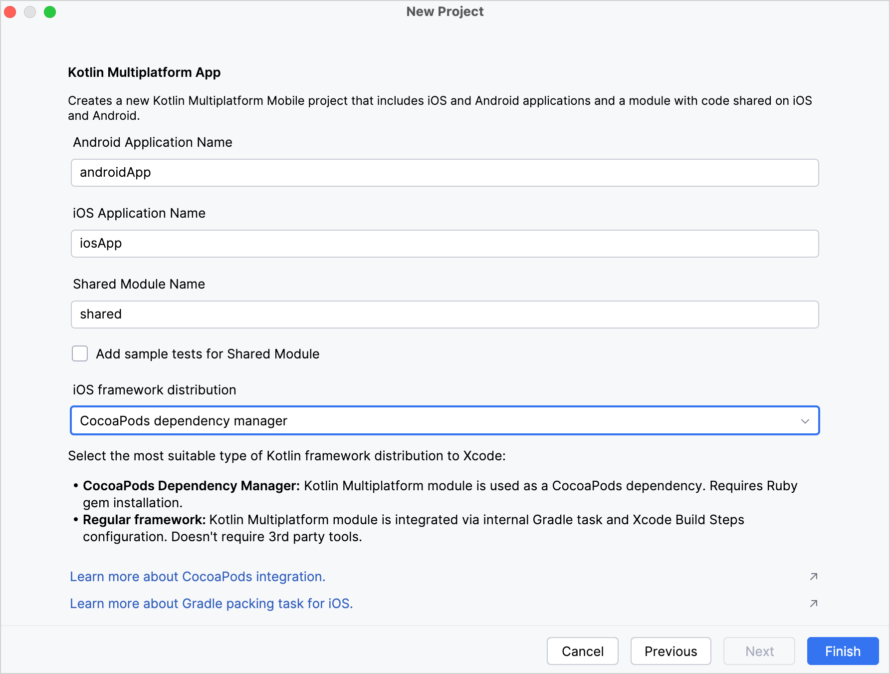

Kotlin/Native provides integration with the
CocoaPods dependency manager
. You can add dependencies on Pod libraries as well as use a multiplatform project with native targets as a CocoaPods dependency.
You can manage Pod dependencies directly in IntelliJ IDEA or Android Studio and enjoy all the additional features such as code highlighting and completion. You can build the whole Kotlin project with Gradle and not ever have to switch to Xcode.
You only need Xcode if you want to change Swift/Objective-C code or run your application on an Apple simulator or device. To work correctly with Xcode, you should
update your Podfile
.
When your environment is set up, you can create a new Kotlin Multiplatform project. For that, use the Kotlin Multiplatform web wizard or the Kotlin Multiplatform plugin for Android Studio.
Using web wizard
To create a project using the web wizard and configure the CocoaPods integration:
Click the
Download
button and unpack the downloaded archive.
In Android Studio, select
File | Open
in the menu.
Navigate to the unpacked project folder and then click
Open
.
Add the Kotlin CocoaPods Gradle plugin to the version catalog. In the
gradle/libs.versions.toml
file, add the following declaration to the
[plugins]
block:
kotlinCocoapods = { id = "org.jetbrains.kotlin.native.cocoapods", version.ref = "kotlin" }
Navigate to the root
build.gradle.kts
file of your project and add the following alias to the
plugins {}
block:
alias(libs.plugins.kotlinCocoapods) apply false
Open the module where you want to integrate CocoaPods, for example the
composeApp
module, and add the following alias to the
plugins {}
block:
In Android Studio, select
File
|
New
|
New Project
in the menu.
In the list of project templates, select
Kotlin Multiplatform App
and then click
Next
.
Name your application and click
Next
.
Choose
CocoaPods Dependency Manager
as the iOS framework distribution option.

Keep all other options default. Click
Finish
.
The plugin will automatically generate the project with the CocoaPods integration set up.
Configure the project
To configure the Kotlin CocoaPods Gradle plugin in your multiplatform project:
In
build.gradle(.kts)
of your project, apply the CocoaPods plugin as well as the Kotlin Multiplatform plugin.
plugins {
kotlin("multiplatform") version "2.1.20"
kotlin("native.cocoapods") version "2.1.20"
}
Configure
version
,
summary
,
homepage
, and
baseName
of the Podspec file in the
cocoapods
block:
plugins {
kotlin("multiplatform") version "2.1.20"
kotlin("native.cocoapods") version "2.1.20"
}
kotlin {
cocoapods {
// Required properties
// Specify the required Pod version here
// Otherwise, the Gradle project version is used
version = "1.0"
summary = "Some description for a Kotlin/Native module"
homepage = "Link to a Kotlin/Native module homepage"
// Optional properties
// Configure the Pod name here instead of changing the Gradle project name
name = "MyCocoaPod"
framework {
// Required properties
// Framework name configuration. Use this property instead of deprecated 'frameworkName'
baseName = "MyFramework"
// Optional properties
// Specify the framework linking type. It's dynamic by default.
isStatic = false
// Dependency export
// Uncomment and specify another project module if you have one:
// export(project(":<your other KMP module>"))
transitiveExport = false // This is default.
}
// Maps custom Xcode configuration to NativeBuildType
xcodeConfigurationToNativeBuildType["CUSTOM_DEBUG"] = NativeBuildType.DEBUG
xcodeConfigurationToNativeBuildType["CUSTOM_RELEASE"] = NativeBuildType.RELEASE
}
}
Run
Reload All Gradle Projects
in IntelliJ IDEA (or
Sync Project with Gradle Files
in Android Studio) to re-import the project.
Generate the
Gradle wrapper
to avoid compatibility issues during an Xcode build.
When applied, the CocoaPods plugin does the following:
Adds both
debug
and
release
frameworks as output binaries for all macOS, iOS, tvOS, and watchOS targets.
Creates a
podspec
task which generates a
Podspec
file for the project.
The
Podspec
file includes a path to an output framework and script phases that automate building this framework during the build process of an Xcode project.
Update Podfile for Xcode
If you want to import your Kotlin project to an Xcode project:
Make changes in your Podfile:
If your project has any Git, HTTP, or custom Podspec repository dependencies, you should specify the path to the Podspec in the Podfile.
For example, if you add a dependency on
podspecWithFilesExample
, declare the path to the Podspec in the Podfile:
target 'ios-app' do
# ... other dependencies ...
pod 'podspecWithFilesExample', :path => 'cocoapods/externalSources/url/podspecWithFilesExample'
end
The
:path
should contain the filepath to the Pod.
When you add a library from the custom Podspec repository, you should also specify the
location
of specs at the beginning of your Podfile:
source 'https://github.com/Kotlin/kotlin-cocoapods-spec.git'
target 'kotlin-cocoapods-xcproj' do
# ... other dependencies ...
pod 'example'
end
Run
pod install
in you project directory.
When you run
pod install
for the first time, it creates the
.xcworkspace
file. This file includes your original
.xcodeproj
and the CocoaPods project.
Close your
.xcodeproj
and open the new
.xcworkspace
file instead. This way you avoid issues with project dependencies.
Run
Reload All Gradle Projects
in IntelliJ IDEA (or
Sync Project with Gradle Files
in Android Studio) to re-import the project.
If you don't make these changes in the Podfile, the
podInstall
task will fail, and the CocoaPods plugin will show an error message in the log.
Possible issues and solutions
CocoaPods installation
Ruby installation
CocoaPods is built with Ruby, and you can install it with the default Ruby that should be available on macOS. Ruby 1.9 or later has a built-in RubyGems package management framework that helps you install the
CocoaPods dependency manager
.
If you're experiencing problems installing CocoaPods and getting it to work, follow
this guide
to install Ruby or refer to the
RubyGems website
to install the framework.
Version compatibility
We recommend using the latest Kotlin version. If your current version is earlier than 1.7.0, you'll need to additionally install the
cocoapods-generate
plugin.
However,
cocoapods-generate
is not compatible with Ruby 3.0.0 or later. In this case, downgrade Ruby or upgrade Kotlin to 1.7.0 or later.
Build errors when using Xcode
Some variations of the CocoaPods installation can lead to build errors in Xcode. Generally, the Kotlin Gradle plugin discovers the
pod
executable in
PATH
, but this may be inconsistent depending on your environment.
To set the CocoaPods installation path explicitly, you can add it to the
local.properties
file of your project manually or using a shell command:
If using a code editor, add the following line to the
local.properties
file:
You might encounter the
rsync error: some files could not be transferred
error. It's a
known issue
that occurs if the application target in Xcode has sandboxing of the user scripts enabled.
To solve this issue:
Disable sandboxing of user scripts in the application target:
Stop the Gradle daemon process that might have been sandboxed: